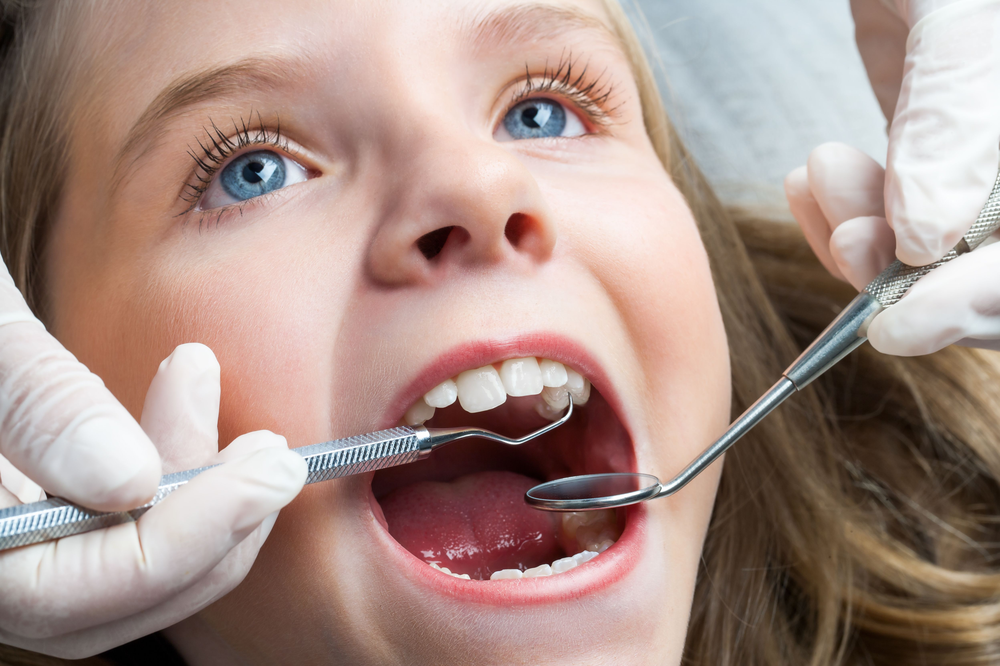

Welcome to 100SMILES Dental Care
Located at 33 Fantail Street, Razole, we have proudly served our community for over three decades. Our roots run deep, and our dedication is to provide the best possible dental care for every patient.
With over 50 years of combined experience, our team of highly skilled dentists and staff delivers compassionate, reliable, and modern dental treatments to keep your smile healthy and confident.
At 100SMILES Dental Care, we specialize in preventive, restorative, and cosmetic dentistry, including routine check-ups, cleanings, dental implants, orthodontics, and emergency care.

Why Choose 100SMILES Dental Care?
- Over 50 years of combined dental experience and expertise
- Comprehensive range of services: preventive, restorative, and cosmetic
- Friendly, compassionate, and professional team dedicated to patient comfort
- State-of-the-art dental equipment and modern treatment techniques
- Patient education focused: we empower you with knowledge for lifelong oral health
- Emergency dental care and personalized treatment plans
New Patients Welcome!
Enjoy 20% off your first dental visit when you book via email or phone!
Book Your Appointment